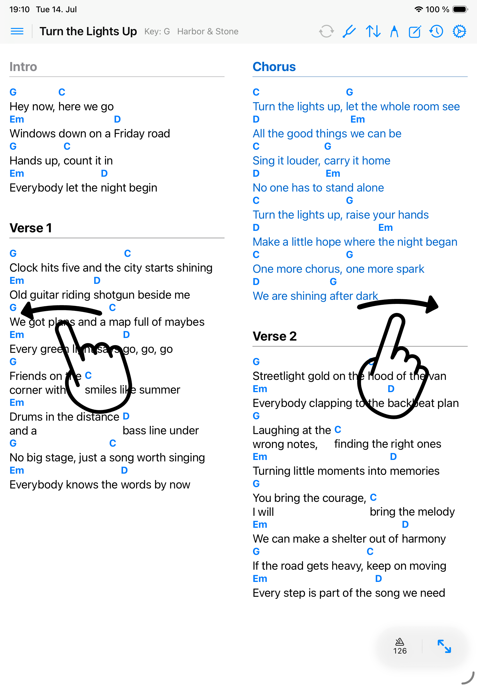
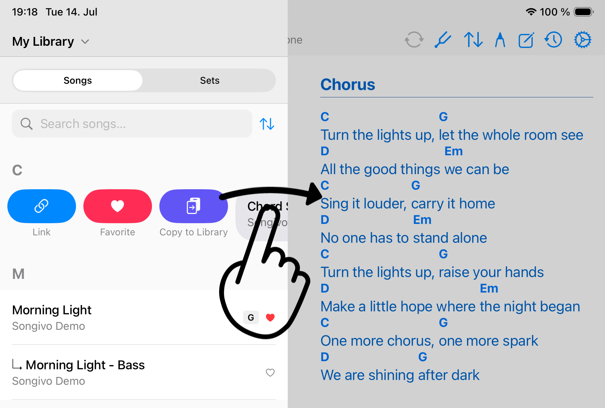
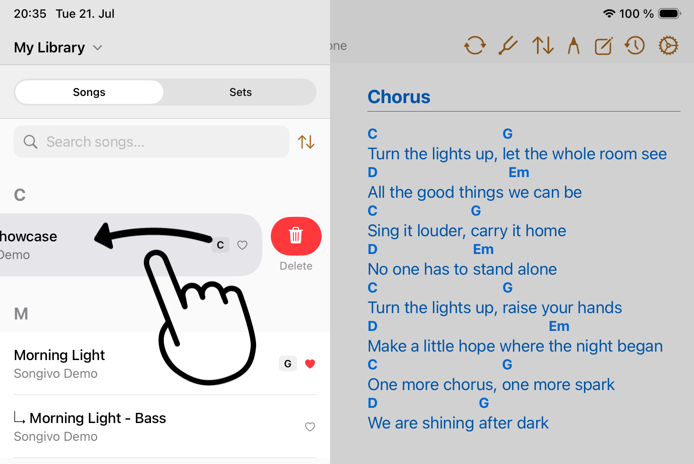
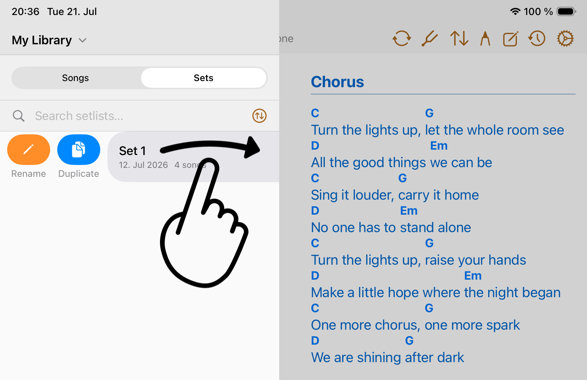
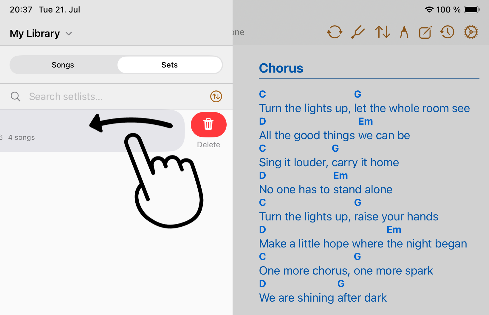
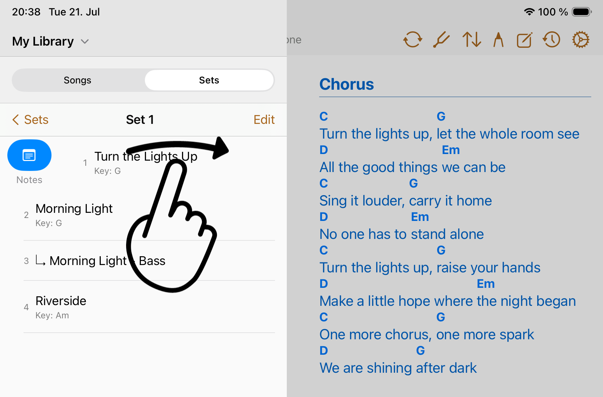
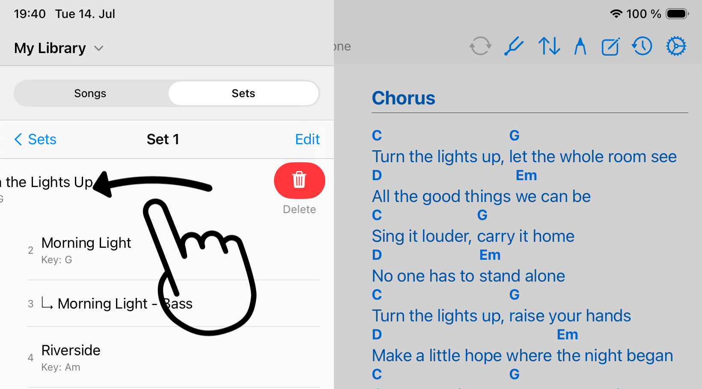

Gestures
Swiping
Songivo uses swipe gestures in several places to help you move through songs and reveal actions.
Swipe between songs
- On multi-page ChordPro or PDF songs, swipe left or right to turn chart pages.
- At the first or last page of an active setlist song, swiping can continue to the previous or next available setlist song.
- Swipe right on the song viewer to move back to the previous available setlist song.

Swipe song rows
In the song library, row swipes reveal management actions for that song. Swipe from the leading edge for actions such as Link, Favorite, and Copy to Library. Swipe from the trailing edge when you intend to delete a song.


Swipe setlist overview rows
In the setlist library, row swipes reveal management actions for that setlist. Swipe from the leading edge for actions such as Rename and Duplicate. Swipe from the trailing edge when you intend to delete the setlist.


Swipe setlist song rows
After selecting a setlist, row swipes reveal management actions for that song in a setlist. Swipe from the leading edge for adding notes. Swipe from the trailing edge when you intend to delete the song from that setlist.


When swipes do nothing
- If no previous or next song is available, Songivo stays on the current song.
- If annotation mode is active, tap Done before using song navigation swipes.
- If the song list is open, swipe the row rather than the main chart area when you want row actions.
- If you are zoomed into a PDF, confirm whether the gesture is moving the page rather than the setlist.